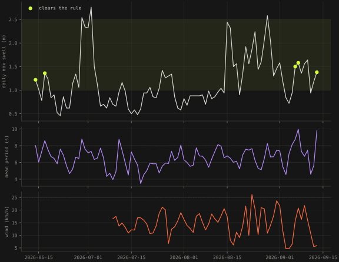

Surf forecast verification · Portugal · started 14 September 2026 · a page that gets better every morning
Not worth the flight
I live in Prague and surf in Portugal, which means every trip starts with a forecast five or six days out and a decision about a flight. The forecast is a model. Models are sometimes right. This is a page that counts how often, by lead day, and turns the count into a rule for when to book.
- spots
- 3 Ericeira · Peniche · Sagres
- wave models, stored daily
- 3 Météo-France MFWAM · DWD GWAM · DWD EWAM
- surfable days, mid-June → mid-September
- 5 of 92 Ericeira · by the rule below
- first skill numbers
- 14 pairs per lead · block bootstrap by week · 6 tests
The question, precisely
A forecast has two failure modes a surfer cares about: it promised a swell that never came (you flew for nothing), and it missed one that did (you stayed home). Both depend on the lead time: the evening before, the model is nearly reporting; six days out it is guessing with confidence. So the object to measure is not "is the forecast good" but P(surfable on the day | what the forecast said d days before), for each d. With that in hand the flight is arithmetic: book when that probability, times what a surf day is worth to you, times the days you would get, exceeds what the trip costs1.
What gets stored, every morning
At 06:10 UTC a GitHub Actions job fetches the seven-day forecast for three spots from three wave models (swell height, period, direction; wave height) and the wind, aggregates each target day to daylight maxima and means, and commits the file. A day later it fetches the analysis for yesterday, the model's final state, and commits that too. From then on every stored forecast can be paired with what its target day turned out to be, at lead 0 through 623. No keys, no server, no database; a folder of small JSON files in a public repository is the whole infrastructure, and anyone can re-run the pairing.
The truth is a proxy and the page says so. The Portuguese buoys (Leixões, Nazaré, Sines) belong to the Instituto Hidrográfico and are released on request, not by API; the European in-situ portal has no Portuguese wave platforms4. So "what arrived" is the analysis of the same model family that made the forecast, which is what a surfer actually checks the night before, and which makes the skill numbers read optimistically. The spread between the three models and the rank correlation are the columns to trust more than the error in metres. If a buoy feed appears, it replaces the proxy without changing the code.
The rule, and why summer looks bleak
"Surfable", version one: daily maximum swell height between 1.0 and 2.5 m, mean period at least 8 s, wind at most 25 km/h or offshore (east ± 60°). Applied to the last 92 days of analysis at Ericeira, that clears five days. Mid-June to mid-September on the west coast is wind swell and the nortada: periods sit at 5–8 s and the afternoon wind is often over 25 km/h. Only eleven of the 92 days had a mean period of 8 s or more. The ground swell that clears the rule easily arrives in autumn, and the page will show it arriving3.

surf/data/analysis.json.When to book: the arithmetic
Let p be the probability the day is surfable given the forecast at lead d, v the value of a surf day, n the number of days you would get if it is on, c the cost of the trip. Book when the expected value of the trip is positive:
At 180 EUR for a flight and two nights, 120 EUR a day and two days, the break-even is 75 %. Until the pairs exist, the page uses the base rate from the last 92 days as p, which is 5 %, so today every row says "not worth the flight". That is the honest prior, and it is why the page exists: the whole value of a forecast is how far it moves p away from 5 %1.
| input | default on the page | where it comes from |
|---|---|---|
| P(surfable | forecast, lead d) | 5 % until 14 pairs | reliability table from the pairs; base rate before that |
| trip cost c | 180 EUR | slider |
| value of a surf day v | 120 EUR | slider |
| days if it is on, n | 2 | slider |
| break-even \(p^{*}\) | 75 % | \(c/(v\,n) = 180/(120\cdot 2)\) |
Methodology: what "good" means here
Every stored forecast is paired with the analysis of its target date, giving one pair per spot, model, lead day (0–6) and date. On each set of pairs, four things are computed3. Continuous: mean absolute error, bias and RMSE of the daily maximum swell height, MAE of the mean period, and Spearman's rank correlation, which survives the fact that the truth and the forecast share a model family better than the error in metres does. Binary: the "surfable" contingency table (hits, misses, false alarms, correct negatives), the probability of detection, the false-alarm ratio, and the two numbers the decision needs, P(surfable | forecast said yes) and P(surfable | forecast said no). Probabilistic: the share of the three models that call the day surfable is treated as a forecast probability \(f_i\) and scored with the Brier score against the outcome \(o_i \in \{0,1\}\); the Brier skill score says how much better that is than a reference forecast, climatology or persistence. Baselines: climatology (the base rate) and persistence (forecast for lead d = the analysis d days before the target). A forecast that does not beat persistence at lead 1 is not a forecast5.
\(H\), \(M\), \(F\) are hits, misses and false alarms of the contingency table; climatology forecasts the base rate \(\bar o\) every day, persistence forecasts the analysis of \(d\) days earlier. A BSS of 0 is "no better than the reference", 1 is perfect, negative is worse than not forecasting.
Uncertainty. Consecutive days are not independent draws, so intervals come from a block bootstrap by ISO week (500 resamples), on MAE and on P(surfable | yes). Gates. No number is shown for a lead with fewer than 14 pairs; below 30 pairs it is marked descriptive. Reliability. For each forecast probability (0, ⅓, ⅔, 1) the page reports how often the day was actually surfable, which is the reliability diagram in table form.
Robustness: does the rule drive the answer?
The binary results are recomputed under five alternative rules: period threshold 7 s and 9 s, wind cap 20 and 30 km/h, and a wider height band of 0.8–3.0 m. On the 92-day climatology alone the sensitivity is already large: 5 % of days are surfable at 8 s, 2 % at 9 s, 19 % at 7 s; 4 % at a 20 km/h wind cap, 5 % at 30; 11 % with the wider band3. The skill numbers will be shown under every one of these, and the conclusion has to hold across them or be reported as rule-dependent. Two further splits are built in: self-verification (MFWAM against its own analysis) is flagged separately from cross-model verification (GWAM and EWAM against the MFWAM analysis), because the first is the optimistic case; and every metric is per spot, since Sagres faces south-west and Ericeira north-west.
What this cannot fix: the truth is a proxy. If the MFWAM analysis is itself wrong on a day, both forecast and truth are wrong together and the pair looks good. That is the direction of the bias, it is known, and a buoy feed is the only cure.
Data engineering: the boring part, done properly
Shape. Two data products, both append-only: one file per issue date with the seven-day forecast for three spots and three models, aggregated to daily records with a fixed schema (max and mean swell height, mean period, circular-mean direction, max wave height, mean wind and direction; daylight window 06–20 UTC; units metres, seconds, degrees, km/h), and one analysis file keyed by spot and date. Aggregation happens at ingest so the repository stays small (8 KB a day) and the verifier only ever compares like with like. Raw hourly data is not kept; the aggregation is deterministic and the API call is reproducible.
Idempotence and failure. The collector overwrites the file for its own issue date and upserts analysis days by key, so a re-run is harmless and a missed run leaves a visible gap rather than a duplicate. A failed API call fails the job; nothing partial is written. The workflow commits only if something changed.
Quality, counted. The verifier reports what the stored files actually contain: issues stored against issues expected, missing issue dates, the share of null values per model, days a model dropped out, the share of target days where the models disagree by more than a metre, gaps in the analysis. On day one it already found something: EWAM returns no values beyond lead 3, so 43 % of its cells are null, and it will only ever be scored at leads 0–3. That is on the page, not in a footnote3.
Tests. A pytest suite builds a synthetic world (a fake analysis, 45 issues, error that grows with lead and a planted positive bias) and checks that the verifier says so: MAE monotone in lead, rank correlation falling, the bias recovered, bootstrap intervals bracketing the point estimate, the 14-pair gate holding, the skill scores beating both baselines, and the quality counts matching the files. Six tests, three seconds, run before the page trusts a number3.
Lineage and cost. data.json is built by one script from the two data products and the rule constants; the figure on this page reads the same constants, so the figure and the page cannot disagree. Infrastructure: a GitHub Actions cron, a public repository and a static page. Cost: zero. If a buoy feed appears, it is one more collector writing into the analysis file under a new key, and the verifier gains a second truth column.
What I expect, written down first
Three claims, dated 14 September 2026, to be checked against the page when the pairs exist. One: at lead 1–2 the three models will agree on swell height to within 0.3 m on most days and the rank correlation with the analysis will be above 0.9; the forecast is useful for deciding whether to drive to Ericeira tomorrow. Two: at lead 5–6 the mean absolute error of daily maximum swell height will exceed 0.5 m and the models will disagree by more than 0.5 m on at least a third of days; the forecast at flight-booking lead is a coin with a bias. Three: at long leads the models will over-forecast swell height more often than under-forecast it (positive bias), because a forecast swell that fades is more common than one that appears from nothing. If three is wrong, the rule for booking flips from "wait" to "trust the early call", which would be worth knowing. Results will be added here with the date they were read.
References
- Decision rule: expected value of booking, p · v · n − c; break-even probability c / (v · n). Standard cost–loss framing of forecast value (Richardson, D. S. (2000), Skill and relative economic value of the ECMWF ensemble prediction system, QJRMS 126).
- Open-Meteo Marine Weather API (models: Météo-France MFWAM, DWD GWAM, DWD EWAM; swell height, period, direction, wave height) and Forecast API (10 m wind). Hourly, aggregated to 06–20 UTC.
- bsandova.com/surf:
collect.py,verify.py,data/forecasts/<date>.json,data/analysis.json(analysis, lead 0, from 14 June 2026),.github/workflows/surf.yml(06:10 UTC daily). Every number on the live page is read fromsurf/data.json. - Instituto Hidrográfico, acesso a dados (data on request); EMODnet Physics ERDDAP search returned no Portuguese wave platforms on 14 September 2026.
- Wilks, D. S. (2011): Statistical Methods in the Atmospheric Sciences, 3rd ed., ch. 8 (forecast verification: contingency tables, Brier score, reliability, skill against climatology and persistence).